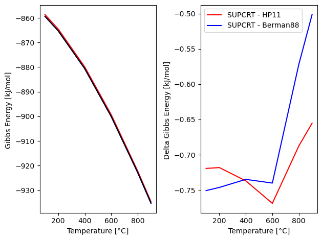

General Usage
Import pygcc
import pygcc
print(pygcc.__version__)
from pygcc.pygcc_utils import *
---------------------------------------------------------------------------
KeyboardInterrupt Traceback (most recent call last)
<ipython-input-1-691b5549329d> in <module>
----> 1 import pygcc
2 print(pygcc.__version__)
3 from pygcc.pygcc_utils import *
D:\ProgramData\Anaconda3\lib\site-packages\pygcc\__init__.py in <module>
8 from .solid_solution import solidsolution_thermo
9 from .clay_thermocalc import calclogKclays, MW
---> 10 from .pygcc_utils import *
11
12 # read version from installed package
D:\ProgramData\Anaconda3\lib\site-packages\pygcc\pygcc_utils.py in <module>
32 import json
33 import numpy as np
---> 34 import pandas as pd
35 import time
36 from scipy.optimize import fsolve, curve_fit
D:\ProgramData\Anaconda3\lib\site-packages\pandas\__init__.py in <module>
20
21 # numpy compat
---> 22 from pandas.compat import (
23 np_version_under1p18 as _np_version_under1p18,
24 is_numpy_dev as _is_numpy_dev,
D:\ProgramData\Anaconda3\lib\site-packages\pandas\compat\__init__.py in <module>
13
14 from pandas._typing import F
---> 15 from pandas.compat.numpy import (
16 is_numpy_dev,
17 np_array_datetime64_compat,
D:\ProgramData\Anaconda3\lib\site-packages\pandas\compat\numpy\__init__.py in <module>
5 import numpy as np
6
----> 7 from pandas.util.version import Version
8
9 # numpy versioning
D:\ProgramData\Anaconda3\lib\site-packages\pandas\util\__init__.py in <module>
----> 1 from pandas.util._decorators import ( # noqa
2 Appender,
3 Substitution,
4 cache_readonly,
5 )
D:\ProgramData\Anaconda3\lib\site-packages\pandas\util\_decorators.py in <module>
12 import warnings
13
---> 14 from pandas._libs.properties import cache_readonly # noqa
15 from pandas._typing import F
16
D:\ProgramData\Anaconda3\lib\site-packages\pandas\_libs\__init__.py in <module>
11
12
---> 13 from pandas._libs.interval import Interval
14 from pandas._libs.tslibs import (
15 NaT,
pandas\_libs\intervaltree.pxi in init pandas._libs.interval()
D:\ProgramData\Anaconda3\lib\importlib\_bootstrap.py in parent(self)
KeyboardInterrupt:
Read database by specifying the direct- or sequential- access and source database
Using the default sequential-access database - speq21.dat
ps = db_reader(sourcedb = 'thermo.2021', sourceformat = 'gwb')
# ps.dbaccessdic, ps.sourcedic, ps.specielist
Using the user-specified sequential-access database
ps = db_reader(dbaccess = './database/slop07.dat', sourcedb = 'thermo.2021', sourceformat = 'gwb')
# ps.dbaccessdic, ps.sourcedic, ps.specielist
Duplicate found for species "AlOH++" in slop07.dat
Duplicate found for species "MgCO3(aq)" in slop07.dat
Duplicate found for species "CaCO3(aq)" in slop07.dat
Duplicate found for species "SrCO3(aq)" in slop07.dat
Duplicate found for species "BaCO3(aq)" in slop07.dat
Duplicate found for species "BaF+" in slop07.dat
Duplicate found for species "Sr(Succ)(aq)" in slop07.dat
Duplicate found for species "Sc(Glut)+(aq)" in slop07.dat
Duplicate found for species "AMP2-" in slop07.dat
Duplicate found for species "HAMP-" in slop07.dat
Duplicate found for species "+H2AMP-" in slop07.dat
Example: Calculate water properties
With IAPWS95
water = iapws95(T = np.array([ 0.01, 25, 60, 100, 150, 200, 250, 300]), P = 200)
print('Density:', water.rho)
print('Gibbs Energy:', water.G)
print('Enthalpy:', water.H)
print('Entropy:', water.S)
Density: [1009.73580931 1005.83998999 991.7058825 967.43838406 927.69054221
877.9652082 816.08878805 734.71208475]
Gibbs Energy: [-56194.26867312 -56592.33889817 -57211.87993461 -58000.04190115
-59093.00868798 -60294.40876454 -61596.26593847 -62995.11966287]
Enthalpy: [-68680.33499723 -68236.29564253 -67613.18053963 -66897.34619192
-65991.9279271 -65062.66635227 -64087.83220987 -63021.29280159]
Entropy: [15.14005087 16.69550855 18.67153539 20.7005717 22.97720284 25.05223509
27.00976077 28.9549847 ]
With ZhangDuan
water = ZhangDuan(T= np.array([1000, 1050]), P = np.array([1000, 2000]))
print(water.rho, water.G)
[175.8286937 314.74510733] [-91457.05964074 -92350.23024927]
Example: Calculate water dielectric constants
dielect = water_dielec(T= np.array([1000, 1050]), P = np.array([1000, 2000]), Dielec_method = 'DEW')
dielect.E, dielect.rhohat, dielect.Ah, dielect.Bh
(array([1.19637079, 2.52660344]),
array([0.17582869, 0.31474511]),
array([12.8720893 , 5.29642074]),
array([0.5403405 , 0.48797969]))
dielect = water_dielec(T= np.array([100, 150]), P = np.array([100, 200]), Dielec_method = 'JN91')
dielect.E, dielect.rhohat, dielect.Ah, dielect.Bh
(array([55.83017195, 44.79388023]),
array([0.96293375, 0.92769054]),
array([0.59551378, 0.67352582]),
array([0.34191435, 0.35183609]))
Example: Calculate quartz properties
With Maier-Kelly powerlaw
Temp = np.array([100, 200, 400, 600, 800, 900])
ps = db_reader()
sup = heatcap( T = Temp, P = 1, Species = 'Quartz', Species_ppt = ps.dbaccessdic['Quartz'],
method = 'SUPCRT')
sup.dG, sup.dCp
(array([-205319.43164294, -206728.65136032, -210399.56629393,
-215044.47020067, -220518.04896025, -223492.57970966]),
array([12.34074489, 13.89377788, 16.14397572, 16.103911 , 16.491911 ,
16.685911 ]))
With Holland and Power’s formulation
Temp = np.array([100, 200, 400, 600, 800, 900])
pshp = db_reader(dbHP_dir = './database/supcrtbl.dat')
hp = heatcap( T = Temp, P = 10, Species = 'Quartz', Species_ppt = pshp.dbaccessdic['Quartz'],
method = 'HP11')
hp.dG, hp.dCp
Duplicate found for species "Fluorphlogopite" in supcrtbl.dat
Duplicate found for species "Arsenic" in supcrtbl.dat
Duplicate found for species "Arsenolite" in supcrtbl.dat
(array([-205491.44716714, -206900.38310661, -210575.79120014,
-215228.32290096, -220682.44526921, -223649.25812766]),
array([12.4075447 , 13.99685509, 16.16426364, 16.05341748, 16.6660167 ,
16.90252028]))
With Berman’s formulation
Temp = np.array([100, 200, 400, 600, 800, 900])
ps = db_reader(dbBerman_dir = './database/berman.dat')
bm = heatcap( T = Temp, P = 1, Species = 'Quartz', Species_ppt = ps.dbaccessdic['Quartz'],
method = 'berman88')
bm.dG, bm.dCp
Duplicate found for species "Cordierite" in berman.dat
(array([-205498.95550508, -206907.11144614, -210575.29239247,
-215221.44900321, -220654.77893829, -223612.45803826]),
array([12.323813 , 13.87414095, 16.29997608, 16.24449507, 16.72930639,
16.90352372]))
import matplotlib.pyplot as plt
fig, (ax1, ax2) = plt.subplots(1, 2)
ax1.plot(Temp, sup.dG*4.182/1e3, 'r', Temp, hp.dG*4.182/1e3, 'b', Temp, bm.dG*4.182/1e3, 'k')
ax1.set_xlabel('Temperature [°C]'); ax1.set_ylabel('Gibbs Energy [kJ/mol] ')
plt.legend(['SUPCRT', 'HP11', 'Berman88'])
ax2.plot(Temp, hp.dG*4.182/1e3 - sup.dG*4.182/1e3, 'r', Temp, bm.dG*4.182/1e3 - sup.dG*4.182/1e3, 'b')
ax2.set_xlabel('Temperature [°C]'); ax2.set_ylabel('Delta Gibbs Energy [kJ/mol] ')
plt.legend(['SUPCRT - HP11', 'SUPCRT - Berman88'])
fig.tight_layout()

Example: Calculate olivine solid solutions
calc = calcRxnlogK( X = 0.85,T = np.array([300, 400, 450]), P = np.array([200, 200, 200]),
Specie = 'olivine', dbaccessdic = ps.dbaccessdic, densityextrap = True)
calc.logK, calc.Rxn
(array([ 9.1687495 , 21.15012305, 17.0669597 ]),
{'type': 'ol',
'name': 'Fo85',
'formula': 'Mg1.70Fe0.30Si1O4',
'MW': 150.1557,
'min': ['Mg1.70Fe0.30Si1O4',
' R&H95, Stef2001',
-466862.12264868076,
nan,
26.21037219328013,
44.049,
24.058078393881452,
0.017393236137667304,
-890893.8814531548,
171.38145315487571,
-3.6586998087954105e-06],
'spec': ['H+', 'Mg++', 'Fe++', 'SiO2(aq)', 'H2O'],
'coeff': [-4, 1.7, 0.30000000000000004, 1, 2],
'nSpec': 5,
'V': 44.049,
'source': ' R&H95, Stef2001',
'elements': ['1.7000', 'Mg', '0.3000', 'Fe', '1.0000', 'Si', '4.0000', 'O']})
Example: Calculate glauconite mineral properties
Temp = np.array([0.01, 20, 30, 40, 60, 80, 100, 150])
calc = calcRxnlogK(T = Temp, P = 'T', Specie = 'clay', dbaccessdic = ps.dbaccessdic, densityextrap = True,
elem = ['Glauconite', '3.654', '.687', '1.175', '0.079', '0.337', '0.679', '0.212', '0.0359', '0'])
calc.logK, calc.Rxn
(array([12.25870693, 9.57522298, 8.38766478, 7.29038298, 5.33107899,
3.63394016, 2.14713934, -0.90587825]),
{'type': 'Smectite',
'name': 'Glauconite',
'formula': 'K0.68Na0.21Fe0.08Ca0.04Mg0.34Al0.69FeIII1.18Si3.654O10(OH)2',
'MW': 426.25271512,
'min': ['K0.68Na0.21Fe0.08Ca0.04Mg0.34Al0.69FeIII1.18Si3.654O10(OH)2',
'B2015, B2021',
-1169917.235355269,
-1253395.3186848022,
90.78782849872155,
141.34069593680297,
77.70879420984171,
83.36446524554509,
-17.841879278113826],
'spec': ['H+',
'K+',
'Na+',
'Fe++',
'Ca++',
'Mg++',
'Al+++',
'Fe+++',
'SiO2(aq)',
'H2O'],
'coeff': [-7.381,
0.679,
0.212,
0.079,
0.0359,
0.337,
0.687,
1.175,
3.654,
4.692],
'nSpec': 10,
'V': 141.34069593680297,
'dG': -4894.933712726446,
'dHf': -5244.206013377212,
'Cp': 345.17439398884756,
'source': 'B2015, B2021',
'elements': ['0.0359',
'Ca',
'0.6790',
'K',
'0.2120',
'Na',
'1.2540',
'Fe',
'0.3370',
'Mg',
'0.6870',
'Al',
'3.6540',
'Si',
'2.0000',
'H',
'12.0000',
'O']})
Example: Create new reactions and calculate equilibrium constants
An example with pyrite, pyrrhotite, magnetite (PPM) reaction
Pyrite + 4 H2O + 2 Pyrrhotite → 4 H2S(aq) + Magnetite
Then we can include the reaction in sourcedic, one of the output of db_reader, which is a dictionary of list of reaction coefficients and species. An example with the format for sourcedic is as follows:
ps.sourcedic[‘Name’] = [‘formula’, number of reactants in the reaction, ‘coefficient of specie 1’, ‘specie 1’, ‘coefficient of specie 2’, ‘specie 2’]
AB → 0.5 A2(aq) + B
ps.sourcedic[‘AB’] = [‘AB’, 2, ‘0.5’, ‘A2(aq), ‘1’, ‘B’]
ps = db_reader(sourcedb = './database/thermo.2021.dat', sourceformat = 'gwb')
ps.sourcedic['Pyrite'] = ['', 4, '4', 'H2S(aq)', '1', 'Magnetite', '-2', 'Pyrrhotite', '-4', 'H2O']
Temp = np.array([300.0000, 325, 350.0000, 400.0000, 415, 425.0000, 435, 450.0000])
Press = 500*np.ones(np.size(Temp))
log_K_PPM = calcRxnlogK( T = Temp, P = Press, Specie = 'Pyrite', dbaccessdic = ps.dbaccessdic,
sourcedic = ps.sourcedic, specielist = ps.specielist).logK
log_K_PPM
array([-9.61842122, -8.38742387, -7.21969753, -4.97772897, -4.29319566,
-3.81890541, -3.32234015, -2.52289322])
Example: Generate GWB thermodynamic database
Note: GWB requires exactly 8 temperature and pressure pairs
# Vectors for Temperature (C) and Pressure (bar) inputs
T = np.array([ 0.010, 25.0000 , 60.0000, 100.0000, 120.0000, 150.0000, 250.0000, 300.0000])
P = 350*np.ones(np.size(T))
nCa = 1
write GWB using default sourced database, with inclusion of solid_solution and clay thermo properties
%%time
write_database(T = T, P = P, cpx_Ca = nCa, solid_solution = 'Yes', clay_thermo = 'Yes',
dataset = 'GWB')
Success, your new GWB database is ready for download
CPU times: total: 16.2 s
Wall time: 17 s
<pygcc.pygcc_utils.write_database at 0x2ae6beaebb0>
write GWB using user-specified sourced database, with inclusion of solid_solution and clay thermo properties
%%time
write_database(T = T, P = 175, cpx_Ca = nCa, solid_solution = 'Yes', clay_thermo = 'Yes',
sourcedb = './database/thermo.29Sep15.dat', dataset = 'GWB')
Success, your new GWB database is ready for download
CPU times: total: 13.9 s
Wall time: 14.6 s
<pygcc.pygcc_utils.write_database at 0x2ae6bd9a550>
write GWB using Jan2020/Apr20 formatted sourced database
%%time
write_database(T = T, P = 125, cpx_Ca = nCa, solid_solution = True, clay_thermo = True,
sourcedb = './database/thermo.com.tdat', dataset = 'GWB')
Success, your new GWB database is ready for download
CPU times: total: 15.9 s
Wall time: 16.6 s
<pygcc.pygcc_utils.write_database at 0x2ae6ba71fd0>
write GWB using Jan2020/Apr20 formatted sourced database with logK as polynomial coefficients, using Tmax and Tmin
%%time
# Temp = np.array([ 0.01, 25, 60, 100, 150, 200, 250, 300])
write_database(T = [0, 300], P = 150, clay_thermo = True, logK_form = 'polycoeffs',
sourcedb = './database/thermo.com.tdat', dataset = 'GWB')
Success, your new GWB database is ready for download
CPU times: total: 13 s
Wall time: 13.5 s
<pygcc.pygcc_utils.write_database at 0x2ae6c9ac0d0>
write GWB using Mar21 formatted sourced database with logK as polynomial coefficients
%%time
# Temp = np.array([ 0.01, 25, 60, 100, 150, 200, 250, 300])
write_database(T = [0, 300], P = 145, clay_thermo = True, logK_form = 'polycoeffs',
sourcedb = './database/thermo_latest.tdat', dataset = 'GWB')
Success, your new GWB database is ready for download
CPU times: total: 13.3 s
Wall time: 13.6 s
<pygcc.pygcc_utils.write_database at 0x2ae6c2138b0>
write GWB using user-specified sourced database and direct-access database (slop07) and FGL97 dielectric constant
%%time
write_database(T = [0, 400], P = 300, cpx_Ca = 0.5, solid_solution = 'Yes', Dielec_method = 'FGL97',
dbaccess = './database/slop07.dat',
sourcedb = './database/thermo.29Sep15.dat', dataset = 'GWB')
Duplicate found for species "AlOH++" in slop07.dat
Duplicate found for species "MgCO3(aq)" in slop07.dat
Duplicate found for species "CaCO3(aq)" in slop07.dat
Duplicate found for species "SrCO3(aq)" in slop07.dat
Duplicate found for species "BaCO3(aq)" in slop07.dat
Duplicate found for species "BaF+" in slop07.dat
Duplicate found for species "Sr(Succ)(aq)" in slop07.dat
Duplicate found for species "Sc(Glut)+(aq)" in slop07.dat
Duplicate found for species "AMP2-" in slop07.dat
Duplicate found for species "HAMP-" in slop07.dat
Duplicate found for species "+H2AMP-" in slop07.dat
Success, your new GWB database is ready for download
CPU times: total: 14 s
Wall time: 14.6 s
<pygcc.pygcc_utils.write_database at 0x2ae6bbb0220>
write GWB using default sourced database and direct-access database (slop07 with Berman mineral data) and FGL97 dielectric constant
%%time
write_database(T = [0, 340], P = 150, Dielec_method = 'FGL97', dbaccess = './database/slop07.dat',
dbBerman_dir = './database/berman.dat', dataset = 'GWB')
Duplicate found for species "AlOH++" in slop07.dat
Duplicate found for species "MgCO3(aq)" in slop07.dat
Duplicate found for species "CaCO3(aq)" in slop07.dat
Duplicate found for species "SrCO3(aq)" in slop07.dat
Duplicate found for species "BaCO3(aq)" in slop07.dat
Duplicate found for species "BaF+" in slop07.dat
Duplicate found for species "Sr(Succ)(aq)" in slop07.dat
Duplicate found for species "Sc(Glut)+(aq)" in slop07.dat
Duplicate found for species "AMP2-" in slop07.dat
Duplicate found for species "HAMP-" in slop07.dat
Duplicate found for species "+H2AMP-" in slop07.dat
Duplicate found for species "Cordierite" in berman.dat
Success, your new GWB database is ready for download
CPU times: total: 8.39 s
Wall time: 8.78 s
<pygcc.pygcc_utils.write_database at 0x2ae6cbfc070>
write GWB using Mar21 formatted sourced database and direct-access database (speq21 with HP mineral data) and DEW dielectric constant
%%time
write_database(T = [0, 275], P = 1100, Dielec_method = 'DEW', dbaccess = './database/speq21.dat',
dbHP_dir = './database/supcrtbl.dat', sourcedb = './database/thermo_latest.tdat', dataset = 'GWB')
Duplicate found for species "Fluorphlogopite" in supcrtbl.dat
Duplicate found for species "Arsenic" in supcrtbl.dat
Duplicate found for species "Arsenolite" in supcrtbl.dat
Success, your new GWB database is ready for download
CPU times: total: 7.64 s
Wall time: 8.26 s
<pygcc.pygcc_utils.write_database at 0x2ae6cb88040>
write GWB using user-specified sourced Pitzer database and default direct-access database along the saturation curve
%%time
write_database(T = [0, 350], P = 'T', dataset = 'GWB', sourcedb = './database/thermo_hmw.tdat')
Success, your new GWB database is ready for download
CPU times: total: 3.2 s
Wall time: 3.5 s
<pygcc.pygcc_utils.write_database at 0x2ae6cbfc610>
write GWB using user-specified sourced EQ3/6 Pitzer database and default direct-access database
%%time
write_database(T = [0, 350], P = 250, dataset = 'GWB', sourcedb = './database/data0.hmw',
sourceformat = 'EQ36')
Success, your new GWB database is ready for download
CPU times: total: 2.86 s
Wall time: 3.06 s
<pygcc.pygcc_utils.write_database at 0x2ae6dc7c7f0>
Example: Generate EQ3/6 thermodynamic database
write EQ3/6 using default sourced database
%%time
write_database(T = T, P = P, cpx_Ca = 1, solid_solution = 'Yes', clay_thermo = 'Yes',
dataset = 'EQ36')
Success, your new EQ3/6 database is ready for download
CPU times: total: 16.6 s
Wall time: 17.3 s
<pygcc.pygcc_utils.write_database at 0x2ae6da9b730>
write EQ3/6 user-specified sourced database
%%time
write_database(T = [0, 400], P = 350, cpx_Ca = 0.5, solid_solution = 'Yes', clay_thermo = 'Yes',
sourcedb = './database/data0.geo', dataset = 'EQ36', sourcedb_codecs = 'latin-1')
Success, your new EQ3/6 database is ready for download
CPU times: total: 13.7 s
Wall time: 14.6 s
<pygcc.pygcc_utils.write_database at 0x2ae6da9b2e0>
write EQ3/6 using user-specified sourced Pitzer database
%%time
write_database(T = [0, 350], P = 200, sourcedb = './database/data0.hmw', dataset = 'EQ36')
Success, your new EQ3/6 database is ready for download
CPU times: total: 2.86 s
Wall time: 3.01 s
<pygcc.pygcc_utils.write_database at 0x2ae692de9d0>
write EQ3/6 user-specified sourced database using FGL97 dielectric constant
%%time
write_database(T = [0, 400], P = 300, cpx_Ca = 0.1, sourcedb = './database/data0.geo',
dataset = 'EQ36', solid_solution = 'Yes', Dielec_method = 'FGL97', clay_thermo = 'Yes')
Success, your new EQ3/6 database is ready for download
CPU times: total: 15.5 s
Wall time: 16.4 s
<pygcc.pygcc_utils.write_database at 0x2ae6ca86940>
write EQ3/6 user-specified sourced database using DEW model
%%time
Temp = np.array([50, 100, 150, 300, 450, 500, 600, 700])
write_database(T = Temp, P = 1500, sourcedb = './database/data0.geo', dataset = 'EQ36',
Dielec_method = 'DEW')
Success, your new EQ3/6 database is ready for download
CPU times: total: 7.48 s
Wall time: 8.11 s
<pygcc.pygcc_utils.write_database at 0x2ae695391c0>
write EQ3/6 using default sourced GWB database and direct-access database
%%time
write_database(T = np.array([0.010, 25, 60, 100, 150, 200, 250, 300]), P = 250, dataset = 'EQ36',
sourcedb = 'thermo.2021', sourceformat = 'gwb', solid_solution = True, clay_thermo = True,
print_msg = True)
Success, your new EQ3/6 database is ready for download
Database for EQ36 generated successfully using JN91 dielectric constant, thermo.2021.dat gwb source database, solid solution included with cpx excluded, clay thermodynamics included
CPU times: total: 1min 19s
Wall time: 1min 23s
<pygcc.pygcc_utils.write_database at 0x2ae6cad2bb0>
Example: Generate ToughReact thermodynamic database
write ToughReact using user-specified EQ3/6 database
%%time
write_database(T = T, P = P, cpx_Ca = nCa, solid_solution = 'Yes', sourcedb = './database/data0.dat',
dataset = 'ToughReact', sourceformat = 'EQ36')
Success, your new ToughReact database is ready for download
CPU times: total: 17.1 s
Wall time: 17.8 s
<pygcc.pygcc_utils.write_database at 0x2ae6ba7f5e0>
write ToughReact using user-specified GWB database
%%time
write_database(T = [0, 350], P = 250, cpx_Ca = 0.25, clay_thermo = 'Yes', dataset = 'ToughReact',
sourcedb = './database/thermo.com.tdat', sourceformat = 'GWB')
Success, your new ToughReact database is ready for download
CPU times: total: 7.64 s
Wall time: 7.86 s
<pygcc.pygcc_utils.write_database at 0x2ae66278c70>
write ToughReact using EQ3/6 user-specified Ptizer sourced database and JN91 dielectric constant
%%time
write_database(T = [0, 300], P = 200, sourceformat = 'EQ36', sourcedb = './database/data0.fmt',
dataset = 'ToughReact', Dielec_method = 'JN91')
Success, your new ToughReact database is ready for download
CPU times: total: 3.73 s
Wall time: 4.02 s
<pygcc.pygcc_utils.write_database at 0x2ae6cb92460>
Example: Generate Pflotran thermodynamic database
write Pflotran using user-specified EQ3/6 database
%%time
write_database(T = T, P = P, clay_thermo = 'Yes', sourcedb = './database/data0.dat',
dataset = 'Pflotran', sourceformat = 'EQ36')
Success, your new Pflotran database is ready for download
CPU times: total: 9.42 s
Wall time: 9.72 s
<pygcc.pygcc_utils.write_database at 0x2ae6cb9cfa0>
write Pflotran using user-specified GWB database
%%time
write_database(T = [0, 350], P = 250, cpx_Ca = 0.1, solid_solution = True, clay_thermo = True,
sourcedb = './database/thermo.com.tdat', dataset = 'Pflotran', sourceformat = 'GWB')
Success, your new Pflotran database is ready for download
CPU times: total: 13.6 s
Wall time: 14.1 s
<pygcc.pygcc_utils.write_database at 0x2ae6f9572b0>
Example: Calculate clay mineral thermodynamics
#%% specify the direct access thermodynamic database
db_dic = db_reader(dbaccess = './database/speq21.dat').dbaccessdic
folder_to_save = 'output'
if os.path.exists(os.path.join(os.getcwd(), folder_to_save)) == False:
os.makedirs(os.path.join(os.getcwd(), folder_to_save))
fid = open('./output/logK_05.txt', 'w')
logKRxn = calcRxnlogK(T = T, P = P, Specie = 'Clay', dbaccessdic = db_dic,
elem = ['Clinochlore', '3', '2', '0', '0', '5', '0', '0', '0', '0'],
densityextrap = True)
logK, Rxn = logKRxn.logK, logKRxn.Rxn
# output in EQ36 format
outputfmt(fid, logK, Rxn, dataset = 'EQ36')
# output in GWB format
outputfmt(fid, logK, Rxn, dataset = 'GWB')
# output in Pflotran format
outputfmt(fid, logK, Rxn, dataset = 'Pflotran')
# output in ToughReact format
outputfmt(fid, logK, Rxn, dataset = 'ToughReact')
fid.close()
Example: Calculate plagioclase solid-solution thermodynamics
#%% specify the direct access thermodynamic database
db_dic = db_reader(dbaccess = './database/speq21.dat').dbaccessdic
folder_to_save = 'output'
if os.path.exists(os.path.join(os.getcwd(), folder_to_save)) == False:
os.makedirs(os.path.join(os.getcwd(), folder_to_save))
fid = open('./output/logK_05.txt', 'w')
logKRxn = calcRxnlogK(T = T, dbaccessdic = db_dic, P = 'T', X = 0.634, Specie = 'Plagioclase',
densityextrap = True)
logK, Rxn = logKRxn.logK, logKRxn.Rxn
# output in EQ36 format
outputfmt(fid, logK, Rxn, dataset = 'EQ36')
# output in GWB format
outputfmt(fid, logK, Rxn, dataset = 'GWB')
# output in Pflotran format
outputfmt(fid, logK, Rxn, dataset = 'Pflotran')
# output in ToughReact format
outputfmt(fid, logK, Rxn, dataset = 'ToughReact')
fid.close()
Example: Calculate new reaction equilibrium constants and export to specific formats
#%% specify the direct access thermodynamic database
db_dic = db_reader(dbaccess = './database/speq21.dat', sourcedb = './database/thermo_latest.tdat', sourceformat = 'GWB')
Temp = np.array([25, 80, 140, 190, 240, 300, 350, 400])
TK_range = Temp + 273.15
folder_to_save = 'output'
if os.path.exists(os.path.join(os.getcwd(), folder_to_save)) == False:
os.makedirs(os.path.join(os.getcwd(), folder_to_save))
fid = open('./output/logK_05.txt', 'w')
db_dic.sourcedic['HWO4-'] = ['HWO4-', 2, '1.000', 'H+', '1.000', 'WO4--']
logK = calcRxnlogK(T = Temp, P = 250, Specie = 'HWO4-', dbaccessdic = db_dic.dbaccessdic, densityextrap = True,
sourcedic = db_dic.sourcedic, specielist = db_dic.specielist, Specie_class = 'aqueous').logK
Rxn = {}
Rxn['type'] = 'tungsten'
Rxn['name'] = 'HWO4-'
Rxn['formula'] = ps.dbaccessdic['HWO4-'][0]
Rxn['MW'] = calc_elem_count_molewt(ps.dbaccessdic['HWO4-'][0])[1]
Rxn['min'] = ps.dbaccessdic['HWO4-']
Rxn['V'] = Rxn['min'][5]
Rxn['source'] = Rxn['min'][1]
Rxn['spec'] = ['H+', 'WO4--']
Rxn['coeff'] = [1.000, 1.000]
Rxn['nSpec'] = len(Rxn['coeff'])
d = calc_elem_count_molewt(ps.dbaccessdic['HWO4-'][0])[0]
Rxn['elements'] = [item for sublist in [['%s' % v,k] for k,v in d.items()] for item in sublist]
# output in EQ36 format
outputfmt(fid, logK, Rxn, dataset = 'EQ36')
# output in GWB format
outputfmt(fid, logK, Rxn, *TK_range, logK_form = 'polycoeffs', dataset = 'GWB')
# output in Pflotran format
outputfmt(fid, logK, Rxn, dataset = 'Pflotran')
# output in ToughReact format
outputfmt(fid, logK, Rxn, dataset = 'ToughReact')
fid.close()
Example: Calculate CO\(_2\) activity and molality
T = np.array([ 0.010, 25 , 60, 100, 150, 175, 200, 250])
P = 250*np.ones(np.size(T))
TK = convert_temperature(T, Out_Unit = 'K')
#%% Calculate CO2 activity and molality at ionic strength of 0.5M
# with Duan_Sun
log10_co2_gamma, mco2 = Henry_duan_sun(TK, P, 0.5)
co2_activity = 10**log10_co2_gamma
# with Drummond
log10_co2_gamma = drummondgamma(TK, 0.5)
co2_activityD = 10**log10_co2_gamma
for i in range(len(T)):
print('Fluid Temperature [C]: ', T[i])
print('Fluid Pressure [bar]: ', P[i])
print('Molality of CO2 in aqueous phase: ', mco2.ravel()[i])
print('Activity of CO2 in aqueous phase (Duan_Sun): ', co2_activity.ravel()[i])
print('Activity of CO2 in aqueous phase (Drummond): ', co2_activityD.ravel()[i])
print('\n')
Fluid Temperature [C]: 0.01
Fluid Pressure [bar]: 250.0
Molality of CO2 in aqueous phase: 1.9318448998874207
Activity of CO2 in aqueous phase (Duan_Sun): 1.1291811186477334
Activity of CO2 in aqueous phase (Drummond): 1.1340282640704162
Fluid Temperature [C]: 25.0
Fluid Pressure [bar]: 250.0
Molality of CO2 in aqueous phase: 1.4446373503231484
Activity of CO2 in aqueous phase (Duan_Sun): 1.117606348338049
Activity of CO2 in aqueous phase (Drummond): 1.1228777554452154
Fluid Temperature [C]: 60.0
Fluid Pressure [bar]: 250.0
Molality of CO2 in aqueous phase: 1.1670235810670366
Activity of CO2 in aqueous phase (Duan_Sun): 1.1097025985737983
Activity of CO2 in aqueous phase (Drummond): 1.1184645553679928
Fluid Temperature [C]: 100.0
Fluid Pressure [bar]: 250.0
Molality of CO2 in aqueous phase: 1.0886091317050277
Activity of CO2 in aqueous phase (Duan_Sun): 1.109458812741491
Activity of CO2 in aqueous phase (Drummond): 1.1250331593722136
Fluid Temperature [C]: 150.0
Fluid Pressure [bar]: 250.0
Molality of CO2 in aqueous phase: 1.1736136778845458
Activity of CO2 in aqueous phase (Duan_Sun): 1.1191485747389718
Activity of CO2 in aqueous phase (Drummond): 1.1457708279040804
Fluid Temperature [C]: 175.0
Fluid Pressure [bar]: 250.0
Molality of CO2 in aqueous phase: 1.2783771607594785
Activity of CO2 in aqueous phase (Duan_Sun): 1.1276219378379773
Activity of CO2 in aqueous phase (Drummond): 1.1602093887224851
Fluid Temperature [C]: 200.0
Fluid Pressure [bar]: 250.0
Molality of CO2 in aqueous phase: 1.4208468773780791
Activity of CO2 in aqueous phase (Duan_Sun): 1.1385618727912967
Activity of CO2 in aqueous phase (Drummond): 1.1769259206651324
Fluid Temperature [C]: 250.0
Fluid Pressure [bar]: 250.0
Molality of CO2 in aqueous phase: 1.77261489074432
Activity of CO2 in aqueous phase (Duan_Sun): 1.1700221965116315
Activity of CO2 in aqueous phase (Drummond): 1.2163347543456382
Example: Calculate water activity
#%% Calculate Water activity, osmotic coefficient and NaCl mean activity coefficient at an ionic strength of 0.5M
aw, phi, mean_act = Helgeson_activity(T, P, 0.5, Dielec_method = 'JN91')
for i in range(len(T)):
print('Fluid Temperature [C]: ', T[i])
print('Fluid Pressure [bar]: ', P[i])
print('Water activity: ', aw.ravel()[i])
print('Water osmotic coefficient: ', phi.ravel()[i])
print('NaCl mean activity coefficient: ', mean_act.ravel()[i])
print('\n')
Fluid Temperature [C]: 0.01
Fluid Pressure [bar]: 250.0
Water activity: 0.9834124336987836
Water osmotic coefficient: 0.9284718584434148
NaCl mean activity coefficient: 0.692629475860604
Fluid Temperature [C]: 25.0
Fluid Pressure [bar]: 250.0
Water activity: 0.9834694019509062
Water osmotic coefficient: 0.9252563947921737
NaCl mean activity coefficient: 0.6830156908321348
Fluid Temperature [C]: 60.0
Fluid Pressure [bar]: 250.0
Water activity: 0.9834545247516562
Water osmotic coefficient: 0.9260960917802195
NaCl mean activity coefficient: 0.6741274234132698
Fluid Temperature [C]: 100.0
Fluid Pressure [bar]: 250.0
Water activity: 0.9836228186833603
Water osmotic coefficient: 0.9165980079013504
NaCl mean activity coefficient: 0.6470880031600432
Fluid Temperature [C]: 150.0
Fluid Pressure [bar]: 250.0
Water activity: 0.9839613772269223
Water osmotic coefficient: 0.8974955418879942
NaCl mean activity coefficient: 0.6014993581955079
Fluid Temperature [C]: 175.0
Fluid Pressure [bar]: 250.0
Water activity: 0.9841773024634818
Water osmotic coefficient: 0.8853158391632446
NaCl mean activity coefficient: 0.5748511235273901
Fluid Temperature [C]: 200.0
Fluid Pressure [bar]: 250.0
Water activity: 0.9843727067517682
Water osmotic coefficient: 0.8742959654165895
NaCl mean activity coefficient: 0.5490393132851259
Fluid Temperature [C]: 250.0
Fluid Pressure [bar]: 250.0
Water activity: 0.9850872802771544
Water osmotic coefficient: 0.8340160306806143
NaCl mean activity coefficient: 0.47686249155819044